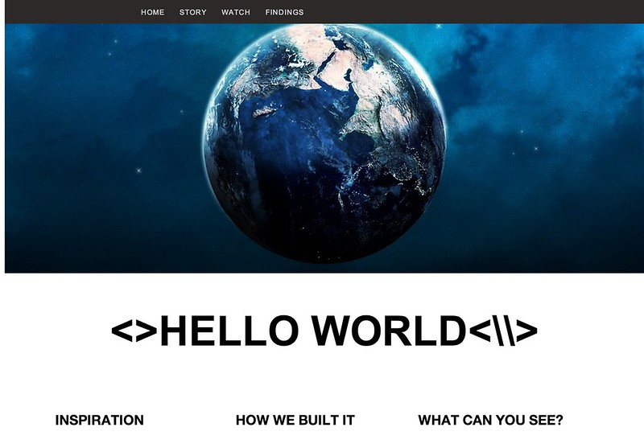

Cuando alguien se inicia en el estudio de cualquier lenguaje de programación, lo primero que se hace al introducir código es pedir a la máquina que muestre un mensaje simple en nuestros monitores; como ejemplo es tradición poner “Hola Mundo” (“hello, world”) y con ello verificamos que el lenguaje o sistema que estamos utilizando funciona correctamente. En equipos que no muestran texto se solía sustituir “Hola Mundo” por el encendido de un LED.
Todo comenzó en 1972, cuando un lenguaje llamado C fue creado por Dennis Ritchie en los laboratorios Bell. Ritchie escribió el famoso libro 'The C Programming Language' junto a Brian Kernighan, y ahí, ¡apareció por primera vez el programa 'Hello, World! '!
Cuando alguien se inicia en el estudio de cualquier lenguaje de programación, lo primero que se hace al introducir código es pedir a la máquina que muestre un mensaje simple en nuestros monitores; como ejemplo es tradición poner “Hola Mundo” (“hello, world”) y con ello verificamos que el lenguaje o sistema que estamos
Creditos: Daniel X. O'Neil 🗿
Visita un video relacionado al tema.